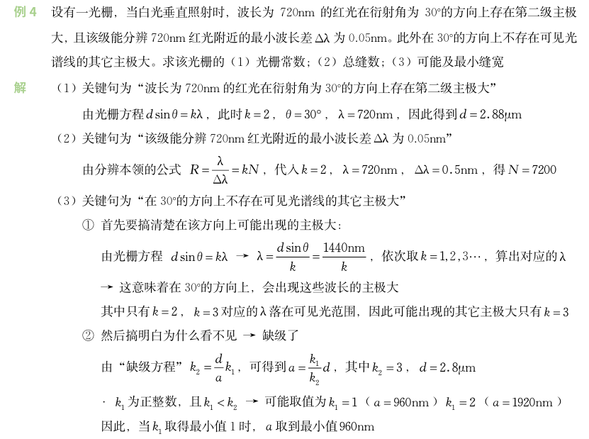

Chapter 8 光的衍射¶
前置知识
- 衍射：波传播时绕过障碍物边缘、偏离直线传播的现象，光的衍射需满足障碍物尺寸与光波长相当的条件
- 菲涅耳衍射：衍射屏离光源和接收屏为有限距离
- 夫琅禾费衍射：衍射屏离光源和接收屏无限远，入射光与衍射光均为平行光，实验中可通过两个透镜实现
- 惠更斯-菲涅尔原理：从同一波阵面上各点发出的无数子波在空间某点相遇时，可相互叠加产生干涉
1 单缝夫琅禾费衍射¶
| 公式 | |
|---|---|
| 明纹 | \(\delta = (2k+1)\frac{\lambda}{2}\)，\(a sin\theta = (2k+1)\frac{\lambda}{2}\)，\(x_k = f tan \theta \approx f sin \theta = \frac{(2k + 1) f \lambda}{2a}\)，\(k=\pm 1,\pm 2,\pm 3,\cdots\) |
| 暗纹 | \(\delta = k \lambda\)，\(a sin\theta = k\lambda\)，\(x_k = f tan \theta \approx f sin \theta = \frac{k f \lambda }{a}\)，\(k = \pm 1,\pm 2,\pm 3,\cdots\) |
| 中央明纹 | \(\Delta\theta_0 \approx \frac{2\lambda}{a}\)，\(\Delta l_0 \approx 2f \frac{\lambda}{a}\) |
| 其余明纹宽度 | \(\Delta l_k = x_{k+1} - x_k = f(\tan\theta_{k+1} - \tan\theta_k) \approx f(\sin\theta_{k+1} - \sin\theta_k) \approx f \frac{\lambda}{a}\) |
| 光强 | \(I = I_{0} \dfrac{sin^2 u}{u^2}\)，其中 \(u = \frac{\pi a}{\lambda} sin\theta\) |
2 光栅衍射¶
衍射图样由单缝衍射与多缝干涉叠加而成，狭缝数越多，条纹越细锐明亮 。
瑞利判据
恰好能分辨 \(λ\) 与 \(λ+Δλ\) 的要求是 \(λ+Δλ\) 的第 \(k\) 级明纹与 \(λ\) 的 \(kN+1\) 级暗纹重合
缺级
光栅衍射的主极大与单缝衍射的暗纹位置重合会使得该级主极大被单缝衍射的暗纹抵消，从而不出现
次极大
- 两暗纹之间存在 \(1\) 条次明纹，此明纹强度为主极大明纹的 \(4\%\)
- \(N-1\) 条暗纹之间有 \(N-2\) 条次明纹
| 公式 | |
|---|---|
| 光栅常数 | \(d = a + b\)，\(a\) 为缝宽，\(b\) 为不透光部分宽度 |
| 主极大（明纹） | \(d sin\theta = k\lambda\)，\(k=0,\pm 1,\pm 2,\cdots\)，\(k < \frac{d}{\lambda}\) |
| 暗纹 | \(d sin\theta = k' \frac{\lambda}{N}\)，\(k' \neq 0,N,2N,\cdots\)，相邻主极大间有 \(N−1\) 条暗纹 |
| 缺级 | \(k = \frac{d}{a}k'\)，\(k' = 0,1,2,\cdots\)，\(k'\) 为单缝衍射暗条纹级数 |
| 分辨本领 | \(R = \frac{\lambda}{\Delta\lambda} = kN\) |
| 斜入射时的光栅方程 | \(\delta = d(sin\varphi + sin\theta) = k \lambda\)，\(k=0,\pm 1,\pm 2,\cdots\) |
斜入射例题
以波长为 \(500 \, \text{nm}\) 的单色平行光斜向入射在光栅常量为 \(2.10 \, \text{μm}\)，缝宽为 \(0.70 \, \text{μm}\) 的光栅上，入射角 \(i = 30^{\circ}\)，具体写出能看到的光谱线的级次，并说明共有几条。
答案
缺级级数 \(k = \frac{d}{a}k' = 3k', \quad k' = 1,2,3,\cdots\)
由 \(d(\sin30^{\circ} + \sin90^{\circ}) = k_{\text{max}}\lambda\) 得 \(k_{\text{max}} = 6.3,\) 取 \(k_{\text{max}} = 6\)
由 \(d[\sin30^{\circ} + \sin(-90^{\circ})] = k_{\text{max}}'\lambda\) 得 \(k_{\text{max}}' = -2.1,\) 取 \(k'_{\text{max}} = 2\)
故屏上可能看到的光谱线级数为 \(-2,-1,0,1,2,4,5\)，共 \(7\) 条谱线

3 其他¶
瑞利判据
当一个点的衍射图样的中央主极大恰好与另一个点的第一级极小相重合时，这两点就处于恰能分辨的位置。此时合成曲线的最小强度为最大强度的80%。 两物点对透镜中心的张角称为最小分辨角。
| 公式 | |
|---|---|
| 爱里斑 | 角半径 \(\theta_0 \approx 1.22\frac{\lambda}{D}\)，半径 \(R \approx 1.22f\frac{\lambda}{D}\) |
| 最小分辨角 | \(\theta_{min} = 1.22\frac{\lambda}{D}\)，分辨本领 \(= \frac{1}{\theta_{min}}\) |
| X射线衍射的布拉格公式 | 干涉加强条件：\(2d sin\theta = k\lambda\)，\(k = 1,2,3,\cdots\)，\(\theta\) 为掠射角 |